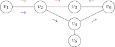
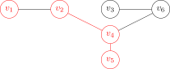
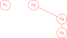

Các định nghĩa cơ bản¶
Định nghĩa 27 (Đồ thị)
Đồ thị (hay graph, hay граф) \(G = (V, E)\) gồm một tập hợp các đỉnh \(V\) và tập hợp các cạnh \(E\) nối các đỉnh với nhau.
Ví dụ 21
Đồ thị sau có:
Tập hợp các đỉnh
Tập hợp các cạnh
Hình 4 Đồ thị vô hướng¶
Ở ví dụ trên, cạnh \(e_{ij}\) nối đỉnh \(v_i\) và đỉnh \(v_j\). Trong trường hợp này hướng của cạnh không quan trọng nên việc viết \(e_{ij}\) và \(e_{ji}\) là tương đương. Đồ thị lúc này gọi là đồ thị vô hướng (hay undirected graph).
Hai đỉnh được gọi là kề nhau (hay adjacent) nếu có cạnh nối giữa chúng.
Ở ví dụ trên thì hai đỉnh \(v_1\) và \(v_2\) kề nhau, nhưng đỉnh \(v_1\) không kề với \(v_3\) vì không có cạnh \(e_{13}\).
Khi đó cạnh nối hai đỉnh kề nhau được gọi là cạnh liên thuộc (hay incident).
Ở đồ thị vô hướng, ta nói bậc (hay degree) của đỉnh \(v\) là số cạnh liên thuộc với đỉnh \(v\), và kí hiệu là \(\deg (v)\).
Ở hình 4 ta thấy \(\deg (v_1) = 1\), \(\deg (v_2) = 3\), \(\deg (v_3) = 1\), \(\deg (v_4) = 1\), \(\deg (v_5) = 1\), \(\deg (v_6) = 2\). Tổng quát ta có định lí sau.
Định lý 9
Giả sử \(G = (V, E)\) là đồ thị vô hướng, khi đó tổng tất cả các bậc của các đỉnh trong \(V\) sẽ bằng hai lần số cạnh:
Chứng minh
Khi lấy tổng tất cả các bậc thì mỗi cạnh \(e_{ij}\) sẽ được tính một lần cho đỉnh \(v_i\) và một lần cho đỉnh \(v_j\). Từ đó suy ra kết quả.
Hệ quả 2
Trong đồ thị vô hướng thì số đỉnh có bậc lẻ là số chẵn.
Chứng minh
Giả sử \(v_1\) là tập các đỉnh có bậc lẻ và \(v_2\) là tập các đỉnh có bậc chẵn. Khi đó \(_1 \cup V_2 = V\) và \(V_1 \cap V_2 = \emptyset\). Theo định lí trên thì
là số chẵn, mà tổng bậc của các đỉnh bậc chẵn \(\sum\limits_{v_2 \in V_2} \deg (v_2)\) cũng là số chẵn nên suy ra tổng \(\sum\limits_{v_1 \in V_1} \deg (v_1)\) cũng là chẵn.
Do mỗi giá trị \(\deg (v_1)\) là lẻ với mọi \(v_1 \in V_1\) nên tổng của chúng là chẵn khi và chỉ khi số phần tử của \(v_1\) là chẵn. Ta có điều phải chứng minh.
Nếu chúng ta quan tâm đến hướng thì khi vẽ cạnh \(e_{ij}\) ta vẽ mũi tên từ đỉnh \(v_i\) tới đỉnh \(v_j\). Đồ thị khi đó gọi là đồ thị có hướng (hay directed graph).
Hình 5 Đồ thị có hướng¶
Ở hình trên:
chỉ có cạnh từ \(v_1\) tới \(v_2\) là \(e_{12}\) chứ không có cạnh từ \(v_2\) tới \(v_1\)
có cạnh từ \(v_6\) tới \(v_5\) là \(e_{65}\) và cũng có cạnh từ \(v_5\) tới \(v_6\) là \(e_{56}\).
Lúc này tập đỉnh là
và tập cạnh là
Đối với đồ thị có hướng thì cạnh \(e_{ij}\) là cạnh đi ra từ đỉnh \(i\) và đi vào đỉnh \(j\). Đỉnh \(i\) gọi là đỉnh đầu, đỉnh \(j\) gọi là đỉnh cuối.
Định nghĩa 28 (Bán bậc vào, bán bậc ra)
Bán bậc ra (hay out-degree) của đỉnh \(v\) là số lượng cạnh đi ra khỏi nó và kí hiệu là \(\deg^+(v)\).
Bán bậc vào (hay in-degree) của đỉnh \(v\) là số lượng cạnh đi vào nó và kí hiệu là \(\deg^-(v)\).
Với ví dụ ở hình 5 thì:
\(\deg^+(v_1) = 1\), \(\deg^-(v_1) = 0\);
\(\deg^+(v_2) = 2\), \(\deg^-(v_2) = 1\);
\(\deg^+(v_3) = 0\), \(\deg^-(v_3) = 1\);
\(\deg^+(v_4) = 0\), \(\deg^-(v_4) = 1\);
\(\deg^+(v_5) = 2\), \(\deg^-(v_5) = 1\);
\(\deg^+(v_6) = 1\), \(\deg^-(v_6) = 1\).
Định lý 10
Nếu \(G = (V, E)\) là đồ thị có hướng thì tổng tất cả các bán bậc ra của các đỉnh bằng tổng tất cả các bán bậc vào, và cũng bằng tổng số cung của đồ thị
Chứng minh
Mỗi cạnh của đồ thị đi ra từ đúng một đỉnh nên \(\sum\limits_{v \in V} \deg^+(v) = \lvert E \rvert\).
Tương tự, mỗi cạnh của đồ thị đi vào đúng một đỉnh nên \(\sum\limits_{v \in V} \deg^-(v) = \lvert E \rvert\).
Kết hợp hai đẳng thức trên ta có điều phải chứng minh.
Định nghĩa 29 (Đường đi)
Một dãy có thứ tự các đỉnh \(v_{i_0}\), \(v_{i_1}\), ..., \(v_{i_n}\) sao cho \(e_{i_t i_{t+1}} \in E\) với mọi \(t = 0, 1, \ldots, n-1\) được gọi là đường đi.
Lúc này đường đi có \(n+1\) đỉnh \(v_{i_0}\), \(v_{i_1}\), ..., \(v_{i_n}\) và \(n\) cạnh \(e_{i_0 i_1}\), \(e_{i_1 i_2}\), ..., \(e_{i_{n-1} i_n}\).
Nếu tồn tại một đường đi từ đỉnh \(v_{i_0}\) tới đỉnh \(v_{i_n}\) thì ta nói đỉnh \(v_{i_n}\) đến được (hay reachable) từ đỉnh \(v_{i_0}\) và kí hiệu là \(v_{i_0} \leadsto v_{i_n}\).
Đỉnh \(v_{i_0}\) được gọi là đỉnh đầu của đường đi.
Đỉnh \(v_{i_n}\) được gọi là đỉnh cuối của đường đi.
Các đỉnh \(v_{i_1}\), ..., \(v_{i_{n-1}}\) được gọi là đỉnh trong của đường đi.
Đường đi được gọi là đường đi đơn (hay simple) nếu tất cả các đỉnh trên đường đi hoàn toàn phân biệt.
Hình 6 thể hiện hai đường đi đơn từ đỉnh \(v_1\) tới đỉnh \(v_3\):
đường đi thứ nhất là \(v_1\), tới \(v_2\) và tới \(v_3\)
đường đi thứ hai là \(v_1\), tới \(v_2\), đi xuống \(v_4\), đi lên \(v_6\) và quay lại \(v_3\).

Hình 6 Đường đi từ \(v_1\) tới \(v_3\)¶
Định nghĩa 30
Đường đi được gọi là chu trình (hay circuit) nếu đỉnh đầu trùng với đỉnh cuối, nghĩa là \(v_{i_0} = v_{i_n}\).
Định nghĩa 31
Hai đồ thị \(G = (V, E)\) và \(G' = (V', E')\) được gọi là đẳng cấu (hay isomorphic) nếu tồn tại một song ánh \(f : V \to V'\) sao cho số cung nối đỉnh \(u\) với đỉnh \(v\) trên \(E\) bằng số cung nối đỉnh \(f(u)\) với đỉnh \(f(v)\) trên \(E'\).
Nói cách khác, kí hiệu \(e_{ij}\) là cạnh nối đỉnh \(v_i\) và \(v_j\) trên \(E\). Đặt \(v_i' = f(v_i)\) và \(v_j' = f(v_j)\) là các đỉnh thuộc \(V'\). Khi đó \(e_{ij}'\) là cạnh thuộc \(E'\) nối đỉnh \(v'_i\) và đỉnh \(v'_j\). Nếu giữa \(v_i\) và \(v_j\) không có cạnh nào thì cũng không có cạnh nối \(v_i'\) và \(v_j'\).
Bài toán đẳng cấu đồ thị (graph isomorphism problem) là một trong những bài toán khó hiện nay (tháng 1 năm 2025) về việc tìm lời giải trong thời gian đa thức. Nếu cho trước hai đồ thị thì nhiệm vụ của bài toán là xác định xem hai đồ thị có đẳng cấu hay không. Rõ ràng nếu số đỉnh nhỏ thì chúng ta có thể thử từng hoán vị (song ánh) của tập đỉnh, nhưng khi số đỉnh lớn thì việc thử sai tất cả hoán vị là không thể.
Định nghĩa 32 (Đồ thị con)
Đồ thị \(G' = (V', E')\) là đồ thị con (hay subgraph, hay подграф) của đồ thị \(G = (V, E)\) nếu \(V' \subseteq V\) và \(E' \subseteq E\).
Nói cách khác, đồ thị con thu được từ đồ thị ban đầu bằng việc lấy một lượng nhất định đỉnh và cạnh.
Ở đồ thị trên hình 7, mình lấy các đỉnh \(v_1\), \(v_2\), \(v_4\) và \(v_5\), và lấy các cạnh \(e_{24}\), \(e_{45}\) thì mình có đồ thị con trên hình 8. Các bạn có thể thấy ở đồ thị ban đầu thì \(v_1\) nối với \(v_2\), nhưng ở đồ thị con thì không có cạnh nối giữa hai đỉnh này.

Hình 7 Đồ thị ban đầu¶

Hình 8 Đồ thị con¶
Định nghĩa 33 (Đồ thị đầy đủ)
Đồ thị vô hướng được gọi là đầy đủ (hay complete, hay полный) nếu mọi cặp đỉnh đều kề nhau.
Đồ thị đầy đủ gồm \(n\) đỉnh kí hiệu là \(K_n\).
Hình 9 Ví dụ \(K_6\)¶
Dễ thấy số cạnh của đồ thị đầy đủ \(n\) đỉnh là \(C^2_n\).
Định nghĩa 34 (Đồ thị hai phía)
Đồ thị vô hướng được gọi là hai phía (hay bipartite) nếu tập đỉnh của nó có thể chia thành hai tập rời nhau \(V_1\) và \(V_2\) sao cho không tồn tại cạnh nối hai đỉnh của \(V_1\), và cũng không tồn tại cạnh nối hai đỉnh của \(V_2\).
Nếu \(\lvert V_1 \rvert = n_1\) và \(\lvert V_2 \rvert = n_2\) và giữa mọi cặp đỉnh \((v_1, v_2)\), trong đó \(v_1 \in V_1\) và \(v_2 \in V_2\), đều có cạnh nối thì đồ thị hai phía đó được gọi là đồ thị hai phía đầy đủ, kí hiệu là \(K_{v_1, v_2}\).
Hình 10 Ví dụ đồ thị hai phía đầy đủ \(K_{3, 2}\)¶
Theo quy tắc nhân, số cạnh của đồ thị hai phía đầy đủ là \(v_1 \cdot v_2\) vì mỗi đỉnh ở \(V_1\) đều có \(v_2\) cạnh nối với nó, và có tất cả \(v_1\) đỉnh trong \(V_1\).
Định nghĩa 35 (Đồ thị phẳng)
Đồ thị được gọi là đồ thị phẳng (hay planar graph, hay планарный граф) nếu chúng ta có thể vẽ đồ thị trên mặt phẳng sao cho:
Mỗi đỉnh tương ứng với một điểm trên mặt phẳng, không có hai đỉnh cùng tọa độ.
Mỗi cạnh tương ứng với một đường liên tục nối hai đỉnh và hai cạnh bất kì không giao nhau.
Phép vẽ đồ thị phẳng này được gọi là biểu diễn phẳng của đồ thị.
Định lý 11 (Định lí Kuratowski)
Một đồ thị vô hướng là đồ thị phẳng khi và chỉ khi nó không chứa đồ thị con đẳng cấu với \(K_{3, 3}\) hoặc \(K_5\).
Định lý 12 (Công thức Euler)
Nếu một đồ thị vô hướng liên thông là đồ thị phẳng và biểu diễn phẳng của đồ thị đó gồm \(v\) đỉnh và \(e\) cạnh chia mặt phẳng thành \(f\) phần thì
Chứng minh
Ta sử dụng quy nạp theo số cạnh \(e\).
Đầu tiên, với đồ thị gồm một đỉnh thì \(e = 0\), \(v = 1\) và \(f = 1\). Khi đó \(v - e + f = 2\).
Tiếp theo, với \(e = 1\) là một cạnh nối hai đỉnh, tức \(v = 2\). Lúc này một cạnh không chia mặt phẳng thành các phần khác nhau nên \(f = 1\), suy ra \(v - e + f = 2\).
Giả sử công thức đúng với mọi \(e < k\), tức là \(v - e + f = 2\).
Với \(q = k\), ta có hai trường hợp.
Trường hợp 1. Cạnh thứ \(k\) tạo thành một hoặc một vài chu trình. Khi đó chu trình tạo thành mặt phẳng đóng, tức là \(f' = f - 1\), như vậy \(v - (k - 1) + f' = 2\), tương đương \(v - k + 1 + f - 1 = 2\), ta có điều phải chứng minh.
Trường hợp 2. Cạnh thứ \(k\) nối hai thành phần liên thông. Giả sử thành phần liên thống thứ nhất có \(v_1\) đỉnh, \(e_1\) cạnh và \(f_1\) mặt. Tương tự, thành phần liên thông thứ hai có \(v_2\) đỉnh, \(e_2\) cạnh và \(f_2\) mặt. Theo giả thiết quy nạp thì
Ở đây \(v_1 + v_2 = v\), \(e_1 + e_2 = e - 1\) (cạnh mới nối hai thành phần liên thông) và \(f_1 + f_2 = f + 1\) (mặt phẳng ở ngoài tính hai lần). Như vậy \(v - e + f = 2\).
Công thức Euler này chúng ta cũng thấy ở hình học không gian đối với một khối đa diện. Nếu \(v\) là số đỉnh (vertices), \(e\) là số cạnh (edges) và \(f\) là số mặt (faces) thì \(v - e + f = 2\).
Hình tứ diện có \(4\) đỉnh, \(6\) cạnh và \(4\) mặt nên \(4 - 6 + 4 = 2\).
Hình lập phương có \(8\) đỉnh, \(12\) cạnh và \(6\) mặt nên \(8 - 12 + 6 = 2\).
Định lý 13
Nếu đồ thị vô hướng \(G = (V, E)\) là đồ thị phẳng có ít nhất \(3\) đỉnh thì
Ngoài ra nếu \(G\) không có chu trình độ dài \(3\) thì